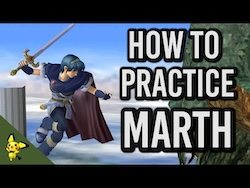

General Info
My name is Peter and I'm trying to get better at playing Marth in Super Smash Bros Melee. He is a difficult character to learn for competitive play as he requires precision in his movement and his attacks to do well. This here is a for fun website to make my learning of Marth more enjoyable and also to have somewhere to keep track of my progress and see how I've improved over time.
Screenshots/Picture Guides
 Short Melee Tutorial For Marth Back to TopHow I've Improved
Date: July 8th 2024
WaveDashing: 3/10... I give myself this score because I can still only wave dash correctly 80% of the time, with perfect wavedash timing about 50%. And that is only in practice, and is difficult to implement in a match.
ChainGrabbing: 2/10... I give myself this score as I still have difficulty chaingrabbing Fox on FD even when he is not moving or airdodging, besides some slight DI. I am still a ways from using this in a match
JC Grabbing: 6/10... I think this because it seems fairly easy to learn, and very doable already after trying it for one day. However, at times I accidentally jump and then nair instead of JC Grab
Dash Dancing: 7/10... I am very good at the practice of dash dancing itself, and have almost mastered it in this form, since I very rarely mess it up and have Marth just do slight turn arounds instead of dashing, but it DOES still happen sometimes. I still have trouble knowing when to use it, even though I can use it in a match.
Landing Attacks: 6/10... Marth is difficult because of how precise you have to be with him, but I am getting much better with practice and predicting enemy movement.
Mental Strategy: 4/10... This is the one that I think might take the longest for me to learn, but overall I can do a decent job predicting enemy movement if I have played against them for a few matches. I do not however, have the muscle memory in my other methods and moveset to be able to consciously realize how my opponent is punishing me for certain attacks, not to mention noticing what THEY do that I can punish.
Defense: 5/10... Marth doesn't have a very effective shield, and against characters that are quick or grab easily, I tend to be predictable with when I shield. I have gotten much much better about rolling, and I almost never roll anymore, thanks to a training feature on 20XX melee.
Short Hops: 7/10... I have gotten much better over the past week or two with short hopping. I am slowly but surely developing it into my muscle memory and it is becoming more natural to me.
Overall Movement Rating: 5/10... Still have trouble with wavedashing and dash dancing and I don't even know half the technical terms for all the ways to move in this game, but I HAVE eliminated my predictable roll and increased muscle memory with short hops and fast falling.
Date: August 16th 2024
Short Hops/ Fast fall: 9/10
Defensive Strategy: 6/10
Mental Strategy: 5/10
Landing Attacks: This varies from opponent to opponent I've realized. This could be grouped with mental strategy, since it depends on the mental ability of the other player.
Wavedashing: 7/10... I can wavedash on command now, and do it often mid game, but maybe not always at the right times, and sometimes I forget to wavedash.
Chaingrabbing: 6/10... I've gotten a few really good combos with chaingrab on fox, but only really on FD.
L-canceling: 4/10... I can l-cancel but only for certain aerials some of the time, and cannot do it very easily yet.
Overall movement: 6/10... I still need to work on improving movement and do dash dancing and wavedashing without thinking about it. By making those things muscle memory, I can focus on my mental strategy more.
Strategy against spacies: 6/10... I can do much better against fox lately, falco still needs some work but only because of his lasers.
Date: December 12th 2024
Movement: 8/10... I am wavedashing much more consistently and able to determine the length of the wavedash almost at will. I can dash dance at different lengths and speeds, although I occasionally will do it too fast and just turn around back and forth like a silly goose.
Mental Strategy: 7/10... This is one that always has room for improvement, but I feel this is the correct rating for those players I have come up against. I can almost instinctively read an opponent's strategy, and when I can't, I'm consciously thinking how I am being punished for certain moves, and how best to put myself in an advantageous sitauation. For example, if the opponent always decides to jump upon my forward throw, I will choose to do an aerial after my forward throw lands. Also, I can train my opponent into worrying about my grab if I run up and grab them at pivotal moments, and then deliver a good punish afterwards. Then, once they are trained, I can use a dash attack instead which for me, leads to great combos and finishers. This strategy won't work on top level players, since running up isn't usually very efficient on them, but for now, it's good mental practice, and it works.
Combo Game: 8/10... I know my character now, and I am using the right moves at the right moments, although I can still work on when to use them at certain percents.
L-cancelling: 6/10... I am still working on this - I'd say I L-cancel 50% of the time, maybe 60%.
Things to Work On
Date: July 8th 2024
The things I want to work on this week, or until my next overview:
1. Movement: Very important to work on wavedashing and dash dancing and continue making muscle memory for short hops and fast falls. Greater focus should be on when to dash dance as opposed to when to WaveDash, and also practice wavedashing.
2. Grabs: I want to do well against Fox, and I know that grabbing is very effective with Marth, and especially against Fox. I tend to chaingrab the best at 20% - 45%.
3. Not being Predictable: This is my most important mental game that I should definitely start with. Nearly eliminating my use of rolls has significantly helped, but I need to make sure I'm not just moving or attacking just for the sake of moving and attacking. I need to plan and strategize those things.
Date: August 16th 2024
Scale for ratings on improvement: 1. Unconscious Incompetence - 2. Conscious Incompetence - 3. Conscious Competence - 4. Unconscious Competence
Skills Rating:
Wavedash: 3 - L-cancel: 2 - Mental game: 2 - Overall movement: 2 - powersheilding falcos laser: 2 - edgegaurding (off and on stage): 2 - Shield Dropping: 1
A good idea would be to meditate before every melee session and to stop playing whenever I feel frustrated as I will probably burn out if I keep playing at that point.
I should focus on, for now, making movement muscle memory, especially l-cancelling, wavedashing, and dash dancing. Practice makes perfect. Once I get those down i will better be able to do everything else since I'm not thinking about movement so much.
Date: December 12th 2024
Things I want to work on:
Shield Dropping
Better L-cancelling
Making efficient movement muscle memory
Continuing to build mental stamina and strategy (comes with practice and a lot of time and experience)
Possibly Ledgedashing. I notice I get punished a lot for my weak recoveries back onto the ledge...
Tips From the Professionals
Date: July 8th 2024
Mew2King in his guide for Marth to Salem said that it is best in most situations to DI up and towards the opponent. He also said Marth's best throws are forward and up throw. Should keep this in mind.
Being able to beat Fox determines how good I am at Melee. I need to mentally emphasize the economy of motion and practice good spacing. Also, another tip is to be careful shielding since Fox is quick and can grab easily. Use chaingrab against him at the right percents. Don't allow free laser hits. More info found here: Melee Guru Marth Matchup Against Fox